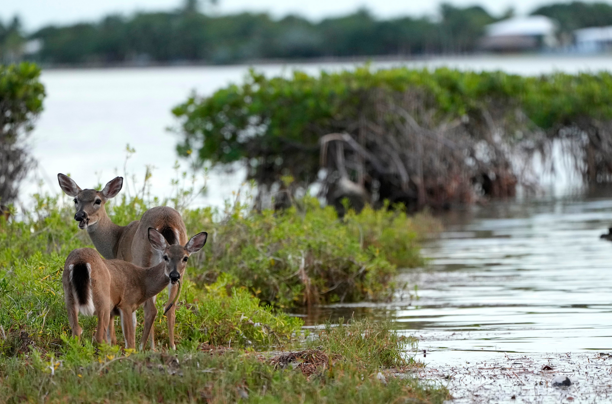

Many animals live with in the backyards of the communities within Tampa Bay.
Animals, such as these deer, rely on plants, clean water, and the overall function of their ecosystem to survive and reproduce.
All organisms within the Tampa Bay rely on water.
Without water free of contamination and debre, millions of organisms will suffer. Creatures of the Tampa Bay will not be able to consume the proper nutrients to survive.
Many plants within the Tampa Bay have evolved to survive harsh conditions, however even when submerged in large amounts of water they can still be perminantly damaged.
Even plants such as shown who are already submerged in water can be significantly damaged from rising water levels.